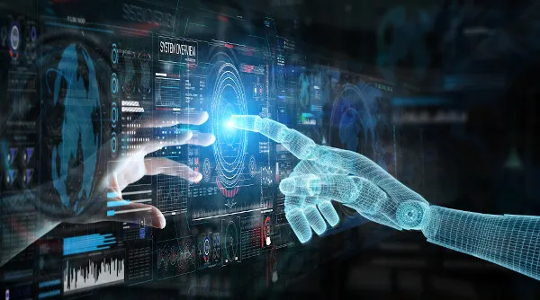
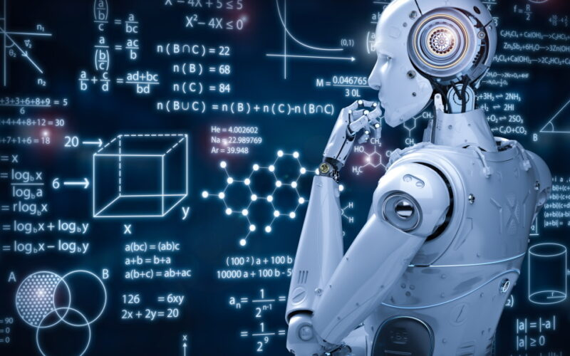
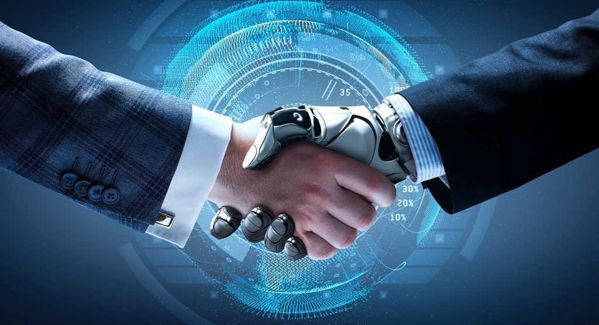

Sobre Inteligência Artificial
A Inteligência Artificial (IA) é um campo da ciência da computação focado no desenvolvimento de sistemas e máquinas capazes de realizar tarefas que, quando realizadas por humanos, exigiriam inteligência. Isso inclui habilidades como percepção, raciocínio, aprendizado, tomada de decisões e até a capacidade de entender a linguagem natural. A IA está cada vez mais presente em nosso cotidiano, seja em assistentes virtuais, sistemas de recomendação, veículos autônomos ou diagnósticos médicos automatizados.
A ideia de criar máquinas inteligentes existe há séculos. No entanto, a IA moderna começou a tomar forma na metade do século XX. Em 1956, o termo "inteligência artificial" foi cunhado durante a conferência de Dartmouth, marcando o início formal do campo. Pesquisadores dessa época tinham o sonho de criar máquinas que pudessem resolver problemas de maneira similar ao cérebro humano.
Nos primeiros anos, houve grande entusiasmo e muitas conquistas, como a criação de algoritmos para resolução de problemas e a construção de sistemas de jogo, como o famoso Deep Blue, o primeiro sistema a derrotar um campeão mundial de xadrez em 1997. Contudo, a IA também enfrentou várias dificuldades e períodos de estagnação conhecidos como "invernos da IA", onde o entusiasmo e o financiamento diminuíram devido à lentidão no progresso esperado.
Nos últimos anos, o campo passou por uma nova revolução com o avanço do poder computacional e o desenvolvimento de novos métodos, como o aprendizado profundo (deep learning), uma técnica baseada em redes neurais artificiais. Isso trouxe à IA um novo impulso, permitindo a criação de sistemas mais complexos e capazes.
A IA pode ser categorizada de diferentes maneiras. A divisão mais comum é feita em IA estreita (fraca) e IA geral (forte):
IA Estreita: Também conhecida como IA fraca, refere-se a sistemas projetados e treinados para realizar uma tarefa específica. Esses sistemas não possuem consciência ou compreensão real do mundo e não podem realizar tarefas fora do seu escopo de treinamento. Exemplos incluem assistentes virtuais como a Siri ou Alexa, sistemas de recomendação da Netflix e carros autônomos. A IA estreita é a forma de IA que temos hoje. IA Geral: A IA forte é uma teoria de inteligência artificial que, hipoteticamente, seria capaz de realizar qualquer tarefa cognitiva que um ser humano pode realizar, incluindo o raciocínio abstrato, aprendizado e resolução de problemas em contextos variados. Até o momento, não há nenhum sistema de IA forte em desenvolvimento avançado, e muitos especialistas acreditam que estamos a décadas de alcançar essa tecnologia.Uma outra categorização importante é a classificação funcional, que divide a IA em três categorias com base na sua capacidade e sofisticação:
- IA Reativa: O nível mais simples de IA, onde os sistemas são projetados para reagir a estímulos específicos com uma resposta pré-programada. Exemplo: o Deep Blue, o sistema de xadrez que derrotou Garry Kasparov.
- IA com Memória Limitada: Sistemas capazes de analisar e interpretar dados em tempo real e, a partir disso, melhorar suas operações. Exemplo: carros autônomos, que analisam o ambiente à sua volta para tomar decisões.
- Teoria da Mente: Um conceito ainda em desenvolvimento, essa IA poderia entender emoções humanas, crenças, pensamentos e interagir de forma social, levando em consideração intenções e comportamentos.
- Autoconsciência: Um estágio teórico da IA, onde as máquinas desenvolveriam consciência própria, semelhante à humana. Ainda não existe nenhum exemplo prático ou avanços significativos nesse sentido.
A IA tem uma vasta gama de aplicações, e algumas das áreas mais significativas são:
- Assistentes Virtuais: Assistentes virtuais, como Siri, Alexa e Google Assistant, são exemplos claros de como a IA pode melhorar a experiência do usuário em interações cotidianas. Eles utilizam processamento de linguagem natural (PLN) para entender comandos e perguntas dos usuários e são capazes de fornecer respostas ou realizar tarefas como enviar mensagens, definir lembretes ou controlar dispositivos domésticos inteligentes.
- Reconhecimento de Imagem e Voz: Tecnologias de reconhecimento de imagem, como aquelas utilizadas pelo Facebook para identificar amigos em fotos ou pelo Google Fotos para organizar álbuns, dependem de redes neurais treinadas para identificar padrões. O reconhecimento de voz, usado em plataformas como YouTube para transcrição automática, é outra aplicação importante, cada vez mais preciso com o avanço do aprendizado profundo.
- Carros Autônomos: Empresas como a Tesla e Waymo estão na vanguarda do desenvolvimento de veículos autônomos que utilizam IA para processar grandes volumes de dados em tempo real, identificar obstáculos e tomar decisões de condução. Sensores e algoritmos permitem que esses carros interpretem sinais de trânsito, evitem colisões e naveguem em ambientes complexos.
- Medicina: Na área da saúde, a IA está revolucionando o diagnóstico e o tratamento de doenças. Sistemas de IA são usados para analisar exames médicos, como mamografias, com precisão comparável à dos melhores especialistas. Além disso, chatbots e assistentes médicos estão ajudando pacientes a monitorar sua saúde e fornecer consultas iniciais, liberando recursos para situações mais críticas.
- Análise de Dados e Big Data: A análise de grandes volumes de dados (Big Data) é outra área em que a IA brilha. Ela é capaz de processar enormes quantidades de informações que seriam impossíveis para os humanos analisarem de maneira eficiente. Empresas de tecnologia, como o Google e o Facebook, usam IA para personalizar anúncios e conteúdo para os usuários, enquanto outras organizações a utilizam para prever tendências de mercado ou otimizar operações.
- Indústria e Automação: A IA também desempenha um papel crucial na automação industrial. Robôs controlados por IA estão sendo empregados em fábricas para realizar tarefas repetitivas ou perigosas com maior eficiência e precisão do que os trabalhadores humanos. Além disso, a IA pode ser usada para otimizar cadeias de suprimentos, prever falhas em equipamentos e aprimorar a logística.
Machine Learning
O Machine Learning (aprendizado de máquina) é um subcampo da inteligência artificial que envolve o desenvolvimento de algoritmos e modelos que permitem que computadores e sistemas "aprendam" a partir de dados sem serem explicitamente programados. Em vez de seguir instruções rígidas, esses algoritmos ajustam-se com base nos padrões dos dados que analisam, tornando-se mais precisos à medida que recebem mais informações.
O Machine Learning tem uma vasta gama de aplicações, desde prever resultados financeiros até detectar fraudes, personalizar recomendações em serviços de streaming e melhorar diagnósticos médicos. O conceito-chave é que os algoritmos aprendem e evoluem continuamente com base em novas entradas de dados.
Tipos de Machine Learning
Existem três tipos principais de machine learning:
- Aprendizado Supervisionado: Neste tipo de aprendizado, o algoritmo é treinado em um conjunto de dados rotulados, onde os exemplos de treinamento já têm as respostas corretas. O objetivo é que, ao receber novos dados, o sistema possa prever a saída com base nos padrões aprendidos. Exemplos incluem sistemas de reconhecimento facial e classificação de e-mails (spam ou não).
- Aprendizado Não Supervisionado: Ao contrário do aprendizado supervisionado, o aprendizado não supervisionado trabalha com dados sem rótulos. O sistema tenta encontrar padrões ou estruturas ocultas nos dados. Um exemplo é a análise de cluster, que agrupa dados semelhantes em categorias, como segmentação de clientes em marketing.
- Aprendizado por Reforço: Esse tipo de aprendizado envolve um agente que interage com o ambiente para atingir um objetivo específico. O agente recebe recompensas ou punições com base em suas ações e, com o tempo, ajusta suas estratégias para maximizar as recompensas. Jogos de computador, como xadrez ou Go, são exemplos clássicos desse tipo de aprendizado, bem como sistemas de navegação de robôs.
Aplicações de Machine Learning
As aplicações de Machine Learning são amplas e variam de setor para setor:
- Diagnóstico Médico: Algoritmos de machine learning ajudam médicos a diagnosticar doenças analisando exames, como raios-X ou ressonâncias magnéticas, e comparando-os com vastos bancos de dados médicos.
- Veículos Autônomos: Carros autônomos usam machine learning para interpretar informações em tempo real, como o tráfego e o ambiente, e tomar decisões instantâneas sobre direção.
- Sistemas de Recomendação: Plataformas como Netflix, Amazon e YouTube utilizam machine learning para analisar o comportamento dos usuários e sugerir conteúdo personalizado, aprimorando a experiência do usuário.
Desafios do Machine Learning
Apesar de seu sucesso, o Machine Learning enfrenta vários desafios:
- Qualidade dos Dados: Para que os modelos de machine learning sejam eficazes, eles precisam de grandes quantidades de dados de alta qualidade. Dados incompletos, incorretos ou enviesados podem levar a modelos imprecisos.
- Explicabilidade: Muitos algoritmos de machine learning, especialmente aqueles baseados em redes neurais profundas, são frequentemente chamados de "caixas-pretas" devido à dificuldade em explicar como chegaram a certas conclusões.
- Preconceito e Viés: Se os dados usados para treinar um modelo forem enviesados, o modelo aprenderá esses preconceitos, levando a decisões injustas, especialmente em áreas como contratação ou justiça criminal.
Big Data
Big Data refere-se ao grande volume de dados – estruturados e não estruturados – que são gerados a cada segundo no mundo digital. Esses dados são tão vastos e complexos que métodos tradicionais de processamento não são suficientes para lidar com eles. O termo não se refere apenas ao volume de dados, mas também à forma como são processados e analisados para obter insights valiosos.
A revolução do Big Data tem sido impulsionada pelo crescimento exponencial da internet, smartphones, redes sociais e dispositivos conectados, como sensores e câmeras. O conceito de Big Data é frequentemente resumido pelos 5 "V’s":
- Volume: Quantidade massiva de dados gerados constantemente.
- Velocidade: A rapidez com que novos dados são gerados e processados.
- Variedade: Diferentes tipos de dados (textos, imagens, vídeos, sensores).
- Veracidade: A confiabilidade dos dados.
- Valor: O potencial que os dados possuem para gerar insights úteis.
A Importância do Big Data
O Big Data está revolucionando a maneira como empresas e organizações tomam decisões. Ele permite que sejam feitas análises detalhadas de dados de consumidores, previsões de mercado, otimização de operações e até mesmo avanços científicos. Alguns exemplos do impacto do Big Data incluem:
- Marketing: As empresas podem analisar grandes volumes de dados sobre o comportamento dos consumidores para personalizar campanhas publicitárias e aumentar a taxa de conversão.
- Saúde: Big Data ajuda a prever surtos de doenças, monitorar a eficácia de tratamentos e até sugerir novas terapias com base em dados genômicos.
- Finanças: No setor financeiro, o Big Data é usado para detectar fraudes em transações e fazer análises preditivas de mercado, ajudando investidores a tomarem decisões mais informadas.
Ferramentas e Tecnologias de Big Data
Para lidar com o Big Data, várias ferramentas e tecnologias foram desenvolvidas. Entre as mais populares estão:
- Hadoop: Um framework de software open-source que facilita o processamento de grandes conjuntos de dados em ambientes distribuídos.
- Spark: Uma ferramenta de processamento de dados que é mais rápida que o Hadoop, devido à sua capacidade de processar dados em memória.
- NoSQL: Bancos de dados não relacionais projetados para armazenar grandes volumes de dados não estruturados.
Desafios do Big Data
Com o crescimento do Big Data, surgem também diversos desafios:
- Privacidade e Segurança: Com grandes volumes de dados pessoais sendo coletados, garantir a privacidade e a segurança dos dados é uma prioridade crítica.
- Armazenamento: Encontrar formas eficazes de armazenar grandes quantidades de dados continua sendo um desafio.
- Análise em Tempo Real: Com a velocidade de geração de dados aumentando, a necessidade de análises em tempo real se torna essencial em muitos setores, como finanças e telecomunicações.
O Futuro da Inteligência Artificial
O futuro da IA promete transformações ainda mais profundas em diversos setores. A IA já está mudando a maneira como vivemos e trabalhamos, e as próximas décadas trarão inovações que parecem hoje parte da ficção científica. Com o avanço da IA, as máquinas se tornarão mais inteligentes, capazes de realizar tarefas mais complexas e até mesmo desenvolver uma maior compreensão do comportamento humano.
IA Geral e Superinteligência
Atualmente, a maior parte das aplicações de IA pertence à IA fraca, ou seja, sistemas especializados em uma única tarefa. No entanto, muitos pesquisadores estão focados no desenvolvimento de uma IA geral – um sistema que pode realizar qualquer tarefa cognitiva que um ser humano pode, em diferentes domínios. Se essa IA for desenvolvida, pode ter implicações profundas para a humanidade, transformando setores como medicina, ciência, engenharia e até a própria definição de trabalho.
A ideia de uma superinteligência – uma IA que supera em muito a inteligência humana – levanta questões éticas e filosóficas importantes. Se uma superinteligência for alcançada, como ela impactaria a sociedade? Como poderíamos garantir que seus objetivos estejam alinhados com os nossos?
Inovações Futuras
- Medicina Personalizada: A IA será capaz de prever doenças e desenvolver tratamentos personalizados com base no perfil genético de cada paciente.
- Automação Avançada: Muitos setores, como transporte, manufatura e até o setor de serviços, serão radicalmente transformados pela automação inteligente.
- Interação Humano-Máquina: As interfaces cérebro-computador podem permitir que os humanos interajam diretamente com máquinas apenas com o pensamento, abrindo novas possibilidades em termos de controle e comunicação.
Desafios Éticos
Com o rápido avanço da IA, também surgem questões éticas complexas. Quem será responsável quando uma IA tomar uma decisão errada? Como podemos garantir que os sistemas de IA sejam justos e transparentes? E como lidar com a ameaça do desemprego causado pela automação?
O futuro da inteligência artificial é repleto de oportunidades e desafios. Embora possamos esperar grandes avanços que melhorem a qualidade de vida, é essencial que continuemos a debater e a implementar regulamentações que garantam o desenvolvimento seguro, ético e benéfico dessas tecnologias revolucionárias. A IA moldará não apenas o futuro da tecnologia, mas também o futuro da humanidade.
Contato
Entre em contato para saber mais sobre o projeto: contato@exemplo.com